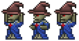
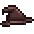

Tim
| Tim | |
|---|---|
|  | |
| Statistics | |
| Type | Undead Enemy |
| Environment | Underground |
| AI Type | Caster |
| Damage | 20 |
| Max Life | 200 |
| Defense | 4 |
| Drops | |
|---|---|
| Coins: | 50 |
| Item | Rate |
|  Wizard Hat | 100% |
Tim is a Caster skeleton found in the Underground. He can be recognized by his Wizard Hat. Just like any other caster, he will randomly teleport himself to a visible part of the screen after shooting three Chaos Balls.
Tim is immune to the Poisoned and the On Fire! debuffs.
Finding Tim
Tim can be found anywhere in the Underground and Caverns layers. Its spawn rate is very low and completely random, but it seems to increase with Depth.
Fighting Tim
Tim is a spellcasting enemy, and shares great similarities between himself and the Fire Imp, and when fighting he should be treated like one. Tim can cast spells that go through blocks, however you can deflect his spells with any type of melee object (ranging from Tools to Weapons).
Trivia
- His name is a reference to Tim the Enchanter from Monty Python and the Holy Grail, as confirmed by Blue on the Terraria IRC.
- Tim looks exactly like a Dark Caster, except that he is wearing a Wizard Hat.
- His clothing resembles the Robe vanity item.